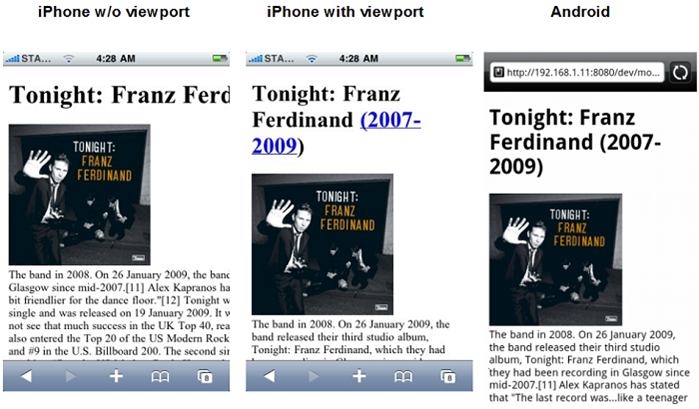

Puedes definir el ancho de la vista en el navegador. Si no utilizas width=device-width, tu página en iOS se estiraría en todo el ancho disponible del celular que es 920px. Si utilizas width=device-width, tu página encajaría en el tamaño real de la pantalla que es 320px. Entonces es recomendable incluir siempre la siguiente etiqueta dentro de nuestro head:
<meta name="viewport" content="width=device-width">

Los media queries de CSS3 son realmente simples en términos de su sintaxis. Tiene una directiva @media, estos media type especifican el soporte al cual apuntan los estilos css definidos dentro de ella: pantalla (screen), papel (print), móviles (handheld), etc. Algunas propiedades CSS están diseñadas para distintos medios. Sin embargo, para nuestro interés utilizamos simplemente:
@media screen and (max-width:500px) {
<!--introducimos acá el css-->
}
Finalmente es recomendable utilizar only screen en vez de únicamente screen para evitar que navegadores antiguos que no reconocen media queries no lean el CSS que está dentro. Por lo que nuestro media query quedaría así:
@media only screen and (min-width:640px) {
<!--introducimos acá el css-->
}
Como habrán visto, utilizamos max-width y min-width, los cuales indican el ancho máximo y mínimo, respectivamente, en el que el navegador interpretará los estilos CSS introducidos dentro de los corchetes.
Pues al final de nuestro documento CSS. Ya que así serán interpretado y sobre escribirán cualquier otro estilo que ya hayamos escrito. Por ejemplo:
html { background: red; }
@media (max-width: 600px) {
html { background: green; }
}
html { background: red; }
@media (min-width: 600px) {
html { background: green; }
}
@media (min-width: 800px) {
html { background: blue; }
}
Y si esta configuración de arriba es complicada para ti, pues podrías utilizar también la siguiente, que es lo mismo:
@media (max-width: 599px) {
html { background: red; }
}
@media (min-width: 600px) and (max-width: 799px) {
html { background: green; }
}
@media (min-width: 800px) {
html { background: blue; }
}